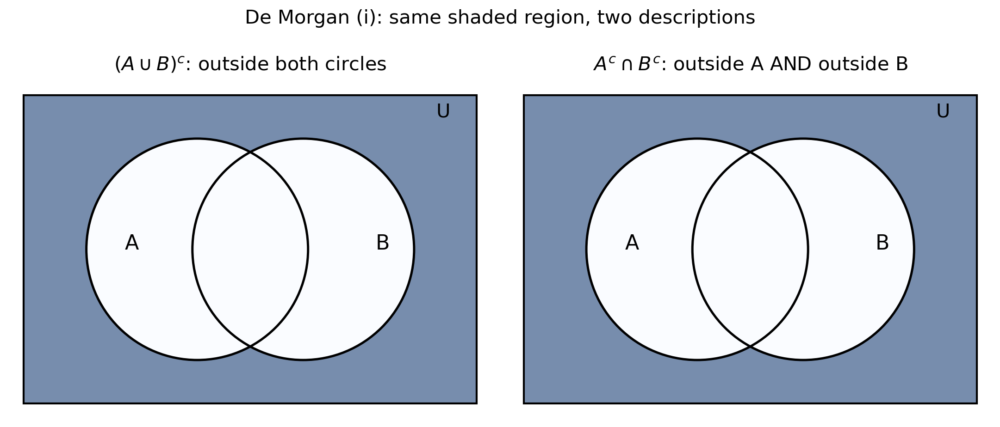
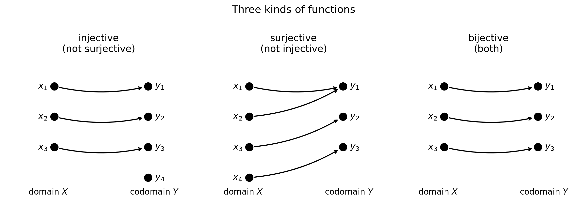

Chapter 1 — Sets, functions, and mathematical preliminaries
1.1 What this chapter is for
Everything in this book is built out of two things: \(sets\) of numbers and \(functions\) that map one set to another.
- A dataset is a \(set\) of points, each point living in \(\mathbb{R}^d\) (a \(d\)-dimensional vector).
- A model is a \(function\) \(f: \mathbb{R}^d \to \mathbb{R}\): it takes a data point and returns a prediction.
- A loss is also a \(function\): it takes the model’s parameters and returns one real number measuring how bad the model is. Training a model means minimizing that function.
- The sentences in later chapters (“for every \(\epsilon > 0\) there exists…”, “if \(f\) is differentiable then…”) are written in the \(logic\) of \(quantifiers\) and \(implications\) covered at the end of this chapter.
So this chapter collects the vocabulary the rest of the book speaks. Nothing here is decoration; every idea below is used again.
1.2 The number sets and intervals
Def. The standard \(number\) \(sets\) are:
\[\mathbb{N} = \{0, 1, 2, 3, \dots\} \quad \text{(natural numbers, includes 0)}\]
\[\mathbb{Z} = \{\dots, -2, -1, 0, 1, 2, \dots\} \quad \text{(integers)}\]
\[\mathbb{Q} = \left\{\frac{p}{q} : p, q \in \mathbb{Z},\ q \ne 0\right\} \quad \text{(rational numbers)}\]
\[\mathbb{R} = \text{all rationals plus irrationals like } \sqrt{2}, \pi \quad \text{(real numbers)}\]
They nest inside each other:
\[\mathbb{N} \subseteq \mathbb{Z} \subseteq \mathbb{Q} \subseteq \mathbb{R}.\]
Two more sets appear constantly in ML (this book follows the MLF convention):
- \(\mathbb{R}_+ = \{x \in \mathbb{R} : x \ge 0\}\), the non-negative reals (note: \(0\) is included).
- \(\mathbb{Z}_+ = \{0, 1, 2, \dots\}\), the non-negative integers.
Note: In this book \(\mathbb{R}_+\) and \(\mathbb{Z}_+\) include \(0\). Some other books exclude it; watch for that when reading elsewhere.
Intervals carve out pieces of \(\mathbb{R}\):
- \(Closed\) \(interval\): \([a, b] = \{x \in \mathbb{R} : a \le x \le b\}\) — endpoints included.
- \(Open\) \(interval\): \((a, b) = \{x \in \mathbb{R} : a < x < b\}\) — endpoints excluded.
Square brackets \([\ ]\) mean “include the endpoint”; round brackets \((\ )\) mean “exclude it”.
Basically, … \(\mathbb{R}\) is the whole number line. An interval is just a segment of that line, and the bracket style tells you whether the cut points themselves are in the segment.
1.3 Sets: elements, cardinality, subsets
Def. A \(set\) = a collection of well-defined items. The items are called \(elements\).
- Write \(x \in S\) for “\(x\) is an element of \(S\)”.
- \(Order\) does not matter: \(\{1, 2, 3\} = \{3, 1, 2\}\).
- \(Duplicates\) do not matter: \(\{1, 1, 2\} = \{1, 2\}\).
Def. The \(cardinality\) of a set \(S\), written \(|S|\), = the number of elements in \(S\).
- \(S = \{1, 2, 5, 7, 9, 300\}\) has \(|S| = 6\).
- \(A = \{\text{Srikanth}, \text{Keerthana}, \text{Balloon}, \text{Cell phone}, \pi\}\) has \(|A| = 5\).
Def. \(X\) is a \(subset\) of \(Y\), written \(X \subseteq Y\), = every element of \(X\) is also an element of \(Y\).
- \(\{1, 2, 5\} \subseteq \{0, 1, 2, 5, 7\}\).
- \(\mathbb{N} \subseteq \mathbb{Z} \subseteq \mathbb{Q} \subseteq \mathbb{R}\).
Def. \(X\) is a \(proper\) \(subset\) of \(Y\), written \(X \subset Y\), = \(X \subseteq Y\) but \(X \ne Y\).
- \(\{1, 2, 5\} \subset \{0, 1, 2, 5, 7\}\) (the second set has extra elements).
- \(\{4, 16, 32, 64\}\) is not a proper subset of \(\{64, 16, 32, 4\}\) — the two sets are equal.
Basically, … A set is a bag of distinct things. A subset is a smaller bag whose contents all came from the bigger bag. “Proper” just means strictly smaller.
1.4 Building sets: set-builder notation
Instead of listing elements, describe the rule that picks them:
\[\{x \in S : \text{condition on } x\} = \text{"all } x \text{ in } S \text{ satisfying the condition"}.\]
- \(\{x \in \mathbb{R} : a \le x \le b\}\) is the closed interval \([a, b]\).
- \(\{x \in \mathbb{R}^d : x_i \in [a, b] \text{ for all } i = 1, \dots, d\}\) is the \(d\)-dimensional box \([a, b]^d\).
Read “\(:\)” or “\(\mid\)” as “such that”. This is how almost every set in this book is written, so get comfortable reading it left to right: “the set of all \(x\) in \(S\) such that …”.
Basically, … Listing \(\{2, 4, 6, 8, \dots\}\) gets old fast. Set-builder notation says the recipe instead of the ingredients: “all \(x\) from here that pass this test”.
1.5 Set operations, Venn diagrams, De Morgan
Fix a \(universe\) \(U\): the big set everything lives in. For sets \(A, B \subseteq U\):
- \(Union\): \(A \cup B = \{x : x \in A \text{ or } x \in B\}\) — elements in either.
- \(Intersection\): \(A \cap B = \{x : x \in A \text{ and } x \in B\}\) — elements in both.
- \(Complement\): \(A^c = \{x \in U : x \notin A\}\) — everything in the universe except \(A\). Also written \(U \setminus A\).
- \(Set\) \(difference\): \(A \setminus B = \{x : x \in A \text{ and } x \notin B\}\).
A \(Venn\) \(diagram\) draws sets as overlapping regions inside a rectangle (the universe). Shading a region shows which set an expression describes. Two expressions that shade the same region are the same set — this is how you check identities visually.
The two big identities are \(De\) \(Morgan's\) \(laws\):
\[(A \cup B)^c = A^c \cap B^c \qquad\text{and}\qquad (A \cap B)^c = A^c \cup B^c.\]
In words: “not in (either one)” is the same as “in neither one”; “not in (both)” is the same as “missing from at least one”. The Venn picture below shows the first law: both sides shade exactly the region outside both circles.

Basically, … De Morgan is about flipping “and/or” when a “not” passes through. “NOT (tall AND dark)” = “short OR light”. Same flip works for sets.
1.6 Cartesian products and relations
Def. The \(Cartesian\) \(product\) of non-empty sets \(X\) and \(Y\) is
\[X \times Y = \{(x, y) : x \in X,\ y \in Y\},\]
the set of all \(ordered\) \(pairs\). Order matters: \((a, 1) \ne (1, a)\).
- If \(A = \{a, b\}\) and \(B = \{1, 2, 3\}\), then \(A \times B = \{(a,1), (a,2), (a,3), (b,1), (b,2), (b,3)\}\).
- \(\mathbb{R}^d = \underbrace{\mathbb{R} \times \cdots \times \mathbb{R}}_{d \text{ times}}\) is the set of \(d\)-dimensional vectors; e.g. \((1, 2, 3.3) \in \mathbb{R}^3\).
Def. A \(relation\) \(R\) between \(X\) and \(Y\) = any collection of ordered pairs with one element from each set, i.e. \(R \subseteq X \times Y\).
- With \(A, B\) as above, \(R_1 = \{(a,1), (b,2), (b,3)\}\), \(R_2 = \{(a,2), (b,1)\}\) are relations from \(A\) to \(B\).
A relation is just “some arrows drawn from \(X\) to \(Y\)” — possibly several arrows out of one element, possibly none. Functions (next section) are the special relations with exactly one arrow per element.
Basically, … \(X \times Y\) is every possible pairing of an \(x\) with a \(y\) — the full menu. A relation is whatever subset of that menu you actually choose.
Relations on a single set \(S\) (so \(R \subseteq S \times S\)) can have three useful \(properties\):
- \(Reflexive\): every element relates to itself: \((x, x) \in R\) for all \(x \in S\).
- \(Symmetric\): arrows go both ways: \((x, y) \in R \Rightarrow (y, x) \in R\).
- \(Transitive\): arrows chain: \((x, y) \in R\) and \((y, z) \in R \Rightarrow (x, z) \in R\).
Def. An \(equivalence\) \(relation\) = a relation that is reflexive, symmetric, and transitive.
Basically, … An equivalence relation is a mathematically strict way of saying “these things are the same for our purposes” — it groups elements into clumps where everything in a clump is mutually interchangeable. (Equality itself is the model example.)
1.7 Functions: the core definition
Def. A \(function\) \(f: X \to Y\) = a rule assigning to each \(x \in X\) exactly one \(y \in Y\).
Three names, never mix them up:
- \(Domain\) = the set of allowed inputs (\(X\)).
- \(Codomain\) = the set of possible outputs (\(Y\)) — declared up front.
- \(Range\) = the outputs that actually occur: \(\{f(x) : x \in X\}\) — always a subset of the codomain.
As a relation: a function is a relation with no two pairs sharing the same first element.
The \(graph\) of \(f: \mathbb{R}^d \to \mathbb{R}\) is the set \(G_f = \{(x, f(x)) : x \in \mathbb{R}^d\}\) — input glued to its output. For \(d = 1\) this is the familiar curve in the plane.
\(Vertical\) \(line\) \(test\): a curve in the plane is the graph of a function iff every vertical line meets it at most once. (Two hits = one input with two outputs = not a function.)
Basically, … A function is a machine with one input slot and one output slot: every input you are allowed to feed it produces exactly one output. Domain = what you may feed it; range = what can come out.
1.8 Three important kinds of functions
Def. Let \(f: X \to Y\).
- \(Injective\) (\(one\)-\(one\)): different inputs give different outputs. Formally, \(f(x_1) = f(x_2) \Rightarrow x_1 = x_2\).
- \(Surjective\) (\(onto\)): every \(y \in Y\) gets hit, i.e. \(range = codomain\).
- \(Bijective\): both injective and surjective — a perfect one-to-one pairing.

\(Horizontal\) \(line\) \(test\): \(f\) is one-one iff every horizontal line meets its graph at most once.
One handy fact: a \(strictly\) \(increasing\) \(function\) (\(x_1 < x_2 \Rightarrow f(x_1) < f(x_2)\)) or a \(strictly\) \(decreasing\) \(function\) (\(x_1 < x_2 \Rightarrow f(x_1) > f(x_2)\)) is always one-one: it never takes the same value twice, so distinct inputs always give distinct outputs.
Note: the non-strict “\(\le\)” versions of these definitions allow flat stretches — a constant function satisfies \(x_1 \le x_2 \Rightarrow f(x_1) \le f(x_2)\) but is not one-one. Strictness is what rules out repeats.
Note: “one-one” and “injective” mean the same thing; “onto” and “surjective” mean the same thing.
Basically, … Injective = no two inputs share an output (no collisions). Surjective = no output is left unused (full coverage). Bijective = perfect pairing, every input matched to a unique output and nothing left over.
1.9 Composition of functions
Def. The \(composition\) \(f \circ g\) = “apply \(g\) first, then \(f\)”:
\[(f \circ g)(x) = f(g(x)).\]
Read \(f \circ g\) as “\(f\) after \(g\)”. Order matters: \(f \circ g\) and \(g \circ f\) are usually different functions.
\(Domain\) \(rules\) (both must hold for \(x\) to be allowed into \(f \circ g\)):
- \(x\) is in the domain of \(g\);
- \(g(x)\) is in the domain of \(f\).
ML pointer: a neural network is a long composition \(f_3 \circ f_2 \circ f_1\) of simple functions (layers). Every “stack” you meet later is composition wearing a costume.
Basically, … Composition is piping: the output of one machine becomes the input of the next. If the first machine’s output doesn’t fit the second machine’s input slot, the pipe is broken there.
1.10 Inverse functions
Def. If \(f\) is one-one, its \(inverse\) \(f^{-1}\) = the function that undoes it:
\[f^{-1}(f(x)) = x \quad \text{for all } x \in \text{domain}(f),\] \[f(f^{-1}(y)) = y \quad \text{for all } y \in \text{range}(f).\]
So \(f^{-1}\) exists exactly when \(f\) is one-one (a bijection between its domain and its range).
Three warnings:
- \(f^{-1} \ne \frac{1}{f}\). The “\(-1\)” is not an exponent; it means “undo”.
- The domain of \(f^{-1}\) is the range of \(f\), and the range of \(f^{-1}\) is the domain of \(f\) — inputs and outputs swap.
- The graph of \(f^{-1}\) is the mirror image of the graph of \(f\) across the line \(y = x\): a point \((a, f(a))\) on \(f\) becomes \((f(a), a)\) on \(f^{-1}\).
Basically, … The inverse is the “reverse gear” of a function: it takes you from output back to the input that produced it. Reverse gear only exists if the function never merged two different inputs into one output (one-one) — otherwise reversing is ambiguous.
1.11 Logic: quantifiers, implies, equivalent
Later chapters state definitions and theorems in a compressed logical shorthand. Four symbols do most of the work:
| Symbol | Read as | Meaning |
|---|---|---|
| \(\forall\) | “for all” | the claim holds for every element |
| \(\exists\) | “there exists” | the claim holds for at least one element |
| \(\Rightarrow\) | “implies” | if the left side is true, the right side must be true |
| \(\Leftrightarrow\) | “is equivalent to” | each side implies the other |
Examples:
- \(\forall x \in \mathbb{R},\ x^2 \ge 0\) reads “for all real \(x\), \(x^2\) is non-negative”.
- \(\exists n \in \mathbb{N}\) such that \(n > 100\) reads “there exists a natural number bigger than 100” (e.g. \(n = 101\)).
- \(x > 2 \Rightarrow x > 1\): being bigger than 2 implies being bigger than 1. (The reverse implication is false.)
- \(x \in A \cap B \Leftrightarrow (x \in A \text{ and } x \in B)\): the two sides say exactly the same thing.
Note: “\(\Rightarrow\)” is one-directional; “\(\Leftrightarrow\)” is both directions at once. Confusing them is one of the most common reading errors in math — always check which arrow is meant.
Basically, … \(\forall\) = “every single one, no exceptions”. \(\exists\) = “at least one exists somewhere”. \(\Rightarrow\) = “this forces that”. \(\Leftrightarrow\) = “these are two names for the same fact”.
1.12 A note on proof techniques (not covered here)
You will sometimes see the words \(direct\) \(proof\), \(proof\) \(by\) \(contrapositive\), \(proof\) \(by\) \(contradiction\), and \(proof\) \(by\) \(induction\) named in mathematical writing. This chapter deliberately does not teach them: the source materials for this chapter (Maths 1 Vol. 1; MLF Week 2) do not develop proof techniques, and this book does not invent content its sources lack. Wherever a later chapter needs a proof idea, it will be introduced at the point of use.
1.13 Worked example set
eg 1 — Subsets and cardinality. Let \(A = \{2, 4, 6, 8\}\) and \(B = \{1, 2, 3, 4, 5, 6, 7, 8\}\).
Step 1: Check every element of \(A\): \(2 \in B\), \(4 \in B\), \(6 \in B\), \(8 \in B\). So \(A \subseteq B\).
Step 2: Is \(A = B\)? No — e.g. \(1 \in B\) but \(1 \notin A\). So \(A \subset B\) (proper).
Step 3: \(|A| = 4\), \(|B| = 8\).
eg 2 — Union and intersection of intervals. Let \(A = [2, 5]\) and \(B = [4, 7]\).
\(A \cup B\): \(x\) is in \(A\) or in \(B\), i.e. \(2 \le x \le 5\) or \(4 \le x \le 7\). Since the intervals overlap (\(4 \le 5\)), together they cover \(2 \le x \le 7\). So \(A \cup B = [2, 7]\).
\(A \cap B\): \(x\) is in both, i.e. \(2 \le x \le 5\) and \(4 \le x \le 7\). Both hold exactly when \(4 \le x \le 5\). So \(A \cap B = [4, 5]\).
eg 3 — Verify De Morgan’s first law with intervals. Take universe \(U = [0, 10]\), \(A = [2, 5]\), \(B = [4, 7]\).
Left side: \((A \cup B)^c\). From eg 2, \(A \cup B = [2, 7]\). Removing \([2, 7]\) from \([0, 10]\) leaves \([0, 2) \cup (7, 10]\). (The endpoints 2 and 7 are excluded because they belong to \(A \cup B\).)
Right side: \(A^c \cap B^c\).
\(A^c = [0, 2) \cup (5, 10]\) (everything in \([0,10]\) except \([2,5]\)).
\(B^c = [0, 4) \cup (7, 10]\) (everything in \([0,10]\) except \([4,7]\)).
Intersect: \(x\) must be in both. Below 2: \([0, 2)\) qualifies for both. Between 2 and 4: in \(B^c\) but not in \(A^c\). Between 4 and 5: in neither. Between 5 and 7: in \(A^c\) but not in \(B^c\). Above 7: \((7, 10]\) qualifies for both. So \(A^c \cap B^c = [0, 2) \cup (7, 10]\).
Both sides equal \([0, 2) \cup (7, 10]\). Verified.
eg 4 — Relation vs function. Let \(X = \{a, b\}\), \(Y = \{1, 2, 3\}\). Then \(X \times Y = \{(a,1), (a,2), (a,3), (b,1), (b,2), (b,3)\}\).
Consider \(R_1 = \{(a, 1), (b, 2), (b, 3)\}\) and \(R_2 = \{(a, 1), (a, 2)\}\).
\(R_1\): \(b\) is paired with two different outputs (\(2\) and \(3\)), so \(R_1\) is not a function.
\(R_2\): \(a\) is paired with two different outputs (\(1\) and \(2\)), so \(R_2\) is not a function either.
Take instead \(R_3 = \{(a, 1), (b, 2)\}\): each of \(a, b\) appears exactly once as a first element. So \(R_3\) is a function, with domain \(\{a, b\}\) and range \(\{1, 2\}\).
eg 5 — Checking relation properties. On \(S = \{1, 2, 3\}\), let \(R = \{(1,1), (2,2), (3,3), (1,2), (2,1)\}\).
Reflexive? Need \((1,1), (2,2), (3,3)\) — all present. Yes.
Symmetric? Check each pair: \((1,2) \in R\) and \((2,1) \in R\). Diagonals are symmetric with themselves. Yes.
Transitive? Check all chains: \((1,2), (2,1) \in R \Rightarrow\) need \((1,1) \in R\) — present. \((2,1), (1,2) \in R \Rightarrow\) need \((2,2) \in R\) — present. All other chains involve only diagonals. Yes.
Reflexive + symmetric + transitive \(\Rightarrow\) \(R\) is an equivalence relation.
eg 6 — Domain and range; a non-surjective function. Let \(f: \mathbb{R} \to \mathbb{R}\), \(f(x) = x^2\).
Range: \(x^2 \ge 0\) for all real \(x\), and every \(y \ge 0\) is hit (take \(x = \sqrt{y}\)). So range \(= [0, \infty)\).
Surjective? Codomain is \(\mathbb{R}\) but range is \([0, \infty) \ne \mathbb{R}\) (e.g. \(-1\) is never hit). So \(f\) is not surjective.
Injective? \(f(2) = 4 = f(-2)\) but \(2 \ne -2\). So \(f\) is not injective either.
eg 7 — Classifying three functions. i) \(f: \mathbb{R} \to \mathbb{R}\), \(f(x) = 2x + 1\).
Injective: \(f(x_1) = f(x_2) \Rightarrow 2x_1 + 1 = 2x_2 + 1 \Rightarrow x_1 = x_2\). Yes.
Surjective: for any \(y \in \mathbb{R}\), take \(x = \frac{y-1}{2}\); then \(f(x) = y\). Yes. So \(f\) is bijective.
\(f: \mathbb{R} \to \mathbb{R}\), \(f(x) = x^2\). Neither injective nor surjective (eg 6).
\(f: \mathbb{R} \to \mathbb{R}\), \(f(x) = x^3\).
Injective: \(f\) is strictly increasing (\(x_1 < x_2 \Rightarrow x_1^3 < x_2^3\)), and an increasing function is one-one. Yes.
Surjective: for any \(y \in \mathbb{R}\), \(x = y^{1/3} \in \mathbb{R}\) satisfies \(f(x) = y\). Yes. So \(f\) is bijective.
eg 8 — Composition, both orders. Let \(f(x) = 3x - 4\) and \(g(x) = x^2\).
\((f \circ g)(x) = f(g(x)) = f(x^2) = 3x^2 - 4\).
\((g \circ f)(x) = g(f(x)) = g(3x - 4) = (3x - 4)^2 = 9x^2 - 24x + 16\).
Note \((f \circ g)(x) \ne (g \circ f)(x)\) — order matters.
eg 9 — Domain of a composition. Let \(f(x) = \frac{3}{x - 1}\) and \(g(x) = \frac{3}{x}\).
Step 1: \((f \circ g)(x) = f(g(x)) = \frac{3}{g(x) - 1} = \frac{3}{\frac{3}{x} - 1} = \frac{3x}{3 - x}\).
Step 2: Domain rule i): \(x\) must be in domain(\(g\)), so \(x \ne 0\).
Step 3: Domain rule ii): \(g(x)\) must be in domain(\(f\)), i.e. \(g(x) \ne 1\), so \(\frac{3}{x} \ne 1\), giving \(x \ne 3\).
Step 4: Domain of \(f \circ g\) is \(\mathbb{R} \setminus \{0, 3\}\).
eg 10 — Finding and verifying an inverse. Let \(f: \mathbb{R} \to \mathbb{R}\), \(f(x) = 2x + 3\). (Increasing, hence one-one, so \(f^{-1}\) exists.)
Step 1: Set \(y = 2x + 3\) and solve for \(x\): \(x = \frac{y - 3}{2}\). So \(f^{-1}(y) = \frac{y - 3}{2}\), i.e. \(f^{-1}(x) = \frac{x - 3}{2}\).
Step 2: Verify \(f^{-1}(f(x)) = \frac{(2x + 3) - 3}{2} = \frac{2x}{2} = x\). ✓
Step 3: Verify \(f(f^{-1}(x)) = 2\left(\frac{x - 3}{2}\right) + 3 = (x - 3) + 3 = x\). ✓
eg 11 — Reading quantifier statements. i) “\(\forall x \in \mathbb{R},\ x^2 \ge 0\)” reads: “for every real number \(x\), \(x^2\) is at least 0.” (True.)
Formalize “some natural number exceeds 100”: \(\exists n \in \mathbb{N}\) such that \(n > 100\). (True: \(n = 101\) works.)
“\(x \in A \cap B \Leftrightarrow x \in A\) and \(x \in B\)” reads: “\(x\) is in the intersection exactly when \(x\) is in \(A\) and also in \(B\).” The \(\Leftrightarrow\) says the two sides are interchangeable.
1.14 Problem set
Full worked solutions are in the companion solutions volume (solutions/01-sets-functions-preliminaries.md).
- Let \(A = \{x \in \mathbb{N} : x < 5\}\). List the elements of \(A\) and give \(|A|\).
- Decide whether each statement is true or false, with one line of justification:
- \(\{4, 16\} \subseteq \{16, 4, 32\}\);
- \(\{4, 16\} \subset \{16, 4\}\);
- \(\{4, 16, 32\} \subset \{16, 4, 32\}\).
- Take universe \(U = [0, 10]\), \(A = [2, 5]\), \(B = [4, 7]\). Compute \(A \cap B\), \(A^c\), and \(B^c\), and use them to verify De Morgan’s second law \((A \cap B)^c = A^c \cup B^c\).
- Let \(A = \{1, 2\}\) and \(B = \{x, y\}\). List all elements of \(A \times B\) and count them.
- Let \(X = \{1, 2, 3\}\), \(Y = \{2, 3\}\), \(R_1 = \{(1, 2), (2, 3), (3, 3)\}\), \(R_2 = \{(1, 2), (1, 3), (2, 2)\}\).
- Which of \(R_1, R_2\) is a function from \(X\) to \(Y\)? Why does the other fail?
- For the one that is a function, state its domain and its range.
- For each function, decide injective / surjective / bijective / neither:
- \(f: \mathbb{R} \to \mathbb{R}\), \(f(x) = x^2 + 1\);
- \(f: \mathbb{R} \to \mathbb{R}\), \(f(x) = 5x - 7\);
- \(f: \mathbb{N} \to \mathbb{N}\), \(f(n) = n + 1\).
- Find the domain of each (as a subset of \(\mathbb{R}\)):
- \(f(x) = \dfrac{1}{x - 2}\);
- \(g(x) = \sqrt{x + 1}\);
- \(h(x) = \dfrac{1}{\sqrt{x - 1}}\).
- Let \(f(x) = x + 1\) and \(g(x) = 2x\). Find \((f \circ g)(x)\), \((g \circ f)(x)\), and \((f \circ f)(x)\). Are any two of them equal?
- Let \(f(x) = \sqrt{x}\) and \(g(x) = x - 5\). Find \((f \circ g)(x)\) and its domain, checking both domain rules.
- Let \(f: \mathbb{R} \to \mathbb{R}\), \(f(x) = \dfrac{x + 1}{3}\). Find \(f^{-1}\) and verify both \(f^{-1}(f(x)) = x\) and \(f(f^{-1}(x)) = x\).
- On \(S = \{1, 2, 3\}\), let \(R = \{(1,1), (2,2), (3,3), (1,3), (3,1)\}\). Is \(R\) reflexive? Symmetric? Transitive? Is it an equivalence relation?
- Write “every integer is a rational number” as a quantified statement using \(\forall\).
- True or false: \(\exists x \in \mathbb{R}\) such that \(x^2 = -1\). Justify in one line.
1.15 Where this goes next
- \(\mathbb{R}^d\) and Cartesian products return in Chapter 2 (vectors and matrices): a dataset is a subset of \(\mathbb{R}^d\).
- Functions \(f: \mathbb{R}^d \to \mathbb{R}\), domains, and composition are the language of Chapters 8–10 (calculus and optimization); the loss functions of Chapters 23 and 31 are exactly such functions.
- Quantifiers (\(\forall\), \(\exists\)) and implication (\(\Rightarrow\)) reappear in every limit, continuity, and convergence definition from Chapter 8 onward.
- Bijectivity and inverses return with matrix inverses (Chapter 3) and change-of-variables ideas later.
Solutions
Attempt each problem first, then click a problem to reveal its worked solution.
Since this book takes \(\mathbb{N} = \{0, 1, 2, \dots\}\):
Step 1: List naturals below 5: \(0, 1, 2, 3, 4\).
Step 2: \(A = \{0, 1, 2, 3, 4\}\), so \(|A| = 5\).
Note: If you learned \(\mathbb{N}\) starting at 1 elsewhere, you would get \(\{1, 2, 3, 4\}\) — the convention matters, which is why the book states it up front.
Check each element of the left set: \(4\) is in the right set, \(16\) is in the right set. True.
- \(\{4, 16\} \subset \{16, 4\}\).
The left set is a subset of the right set (same check as i), but the sets are equal — order does not matter, so \(\{16, 4\} = \{4, 16\}\). A proper subset must be strictly smaller. False.
- \(\{4, 16, 32\} \subset \{16, 4, 32\}\).
Again equal sets (order irrelevant). False — for the same reason as ii).
Step 1: \(A \cap B\). Need \(2 \le x \le 5\) and \(4 \le x \le 7\): both hold exactly on \([4, 5]\).
Step 2: \((A \cap B)^c = [4, 5]^c\) inside \([0, 10]\): everything except \([4,5]\), i.e. \([0, 4) \cup (5, 10]\).
Step 3: \(A^c = [0, 2) \cup (5, 10]\) (remove \([2,5]\) from \([0,10]\)).
Step 4: \(B^c = [0, 4) \cup (7, 10]\) (remove \([4,7]\) from \([0,10]\)).
Step 5: \(A^c \cup B^c = ([0, 2) \cup (5, 10]) \cup ([0, 4) \cup (7, 10])\).
Collect: below 4, \([0,4)\) is covered by \(B^c\); above 5, \((5,10]\) is covered by \(A^c\). Check the boundary points: \(4 \in A\) and \(4 \in B\), so \(4\) is in neither complement; \(5 \in A\) and \(5 \in B\), so \(5\) is in neither complement. Hence \(A^c \cup B^c = [0, 4) \cup (5, 10]\).
Step 6: This equals \((A \cap B)^c\) from Step 2. De Morgan’s second law verified.
List: \(A \times B = \{(1, x), (1, y), (2, x), (2, y)\}\).
Count: 4 elements (every one of the 2 choices from \(A\) pairs with every one of the 2 choices from \(B\)).
\(R_2 = \{(1,2), (1,3), (2,2)\}\): the input \(1\) is paired with two different outputs (\(2\) and \(3\)), violating “exactly one output per input” — \(R_2\) is not a function.
- For \(R_1\): domain \(= \{1, 2, 3\}\) (all first elements); range \(= \{2, 3\}\) (the second elements that occur).
Injective? \(f(1) = 2 = f(-1)\) with \(1 \ne -1\). No.
Surjective? \(f(x) \ge 1\) always, so e.g. \(0 \in \mathbb{R}\) is never hit. No.
Neither.
- \(f: \mathbb{R} \to \mathbb{R}\), \(f(x) = 5x - 7\).
Injective: \(f(x_1) = f(x_2) \Rightarrow 5x_1 - 7 = 5x_2 - 7 \Rightarrow 5x_1 = 5x_2 \Rightarrow x_1 = x_2\). Yes.
Surjective: for any \(y \in \mathbb{R}\), \(x = \frac{y + 7}{5}\) satisfies \(f(x) = 5\cdot\frac{y+7}{5} - 7 = y\). Yes.
Bijective.
- \(f: \mathbb{N} \to \mathbb{N}\), \(f(n) = n + 1\).
Injective: \(n_1 + 1 = n_2 + 1 \Rightarrow n_1 = n_2\). Yes.
Surjective? \(0 \in \mathbb{N}\): is there \(n \in \mathbb{N}\) with \(n + 1 = 0\)? That needs \(n = -1 \notin \mathbb{N}\). No.
Injective but not surjective.
Basically, … shifting every natural number up by one leaves a hole at 0 — nothing maps to it.
The denominator cannot be zero: \(x - 2 \ne 0\). Domain \(= \mathbb{R} \setminus \{2\}\).
- \(g(x) = \sqrt{x + 1}\).
Need \(x + 1 \ge 0\), i.e. \(x \ge -1\). Domain \(= [-1, \infty)\).
- \(h(x) = \dfrac{1}{\sqrt{x - 1}}\).
Two requirements: \(x - 1 \ge 0\) (square root) and \(\sqrt{x - 1} \ne 0\) (denominator). Together: \(x - 1 > 0\). Domain \(= (1, \infty)\).
\((f \circ g)(x) = f(g(x)) = f(2x) = 2x + 1\).
\((g \circ f)(x) = g(f(x)) = g(x + 1) = 2(x + 1) = 2x + 2\).
\((f \circ f)(x) = f(f(x)) = f(x + 1) = (x + 1) + 1 = x + 2\).
No two are equal: \(2x + 1\), \(2x + 2\), and \(x + 2\) are all different functions. (Domains are all \(\mathbb{R}\).)
Step 1: \((f \circ g)(x) = f(g(x)) = \sqrt{x - 5}\).
Step 2: Domain rule i): \(x \in \text{domain}(g) = \mathbb{R}\) — no restriction.
Step 3: Domain rule ii): \(g(x) \in \text{domain}(f)\), i.e. \(x - 5 \ge 0\), so \(x \ge 5\).
Step 4: Domain of \(f \circ g\) is \([5, \infty)\).
Note: Even though \(g\) accepts every real, the composition rejects \(x < 5\) because \(g\)’s output would not fit \(f\)’s input slot.
Step 1: Set \(y = \dfrac{x + 1}{3}\) and solve for \(x\): \(3y = x + 1\), so \(x = 3y - 1\). Hence \(f^{-1}(x) = 3x - 1\).
Step 2: \(f^{-1}(f(x)) = 3\left(\dfrac{x + 1}{3}\right) - 1 = (x + 1) - 1 = x\). ✓
Step 3: \(f(f^{-1}(x)) = \dfrac{(3x - 1) + 1}{3} = \dfrac{3x}{3} = x\). ✓
Reflexive? \((1,1), (2,2), (3,3)\) all present. Yes.
Symmetric? The non-diagonal pairs are \((1,3)\) and \((3,1)\) — each other’s reverse is present. Yes.
Transitive? Check chains through distinct elements: \((1,3), (3,1) \in R \Rightarrow\) need \((1,1) \in R\) — present. \((3,1), (1,3) \in R \Rightarrow\) need \((3,3) \in R\) — present. Chains involving only diagonals are automatic. Yes.
All three hold, so \(R\) is an equivalence relation.
- False. For every real \(x\), \(x^2 \ge 0\), so \(x^2 = -1\) has no real solution.